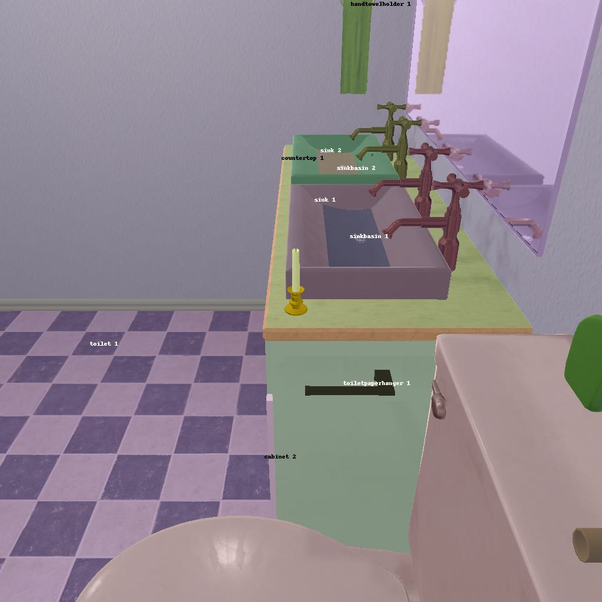

---------------------------------------------------------task: 9---------------------------------------------------------
--------------------------------------------------------------------------------------------------------------------------------------------------------------------
--------------------------------------------------------------------------------------------------------------------------------------------------------------------
Step:--------------------------------------------------------------------------0-------------------------------------------------------------------------------
----------------------------------------
VLM Prompt:
Image1:
**Instruction**
1. Analyze the provided image to identify all visible household objects, focusing on those relevant to the task description "put some soapbottle on toilet."
2. Use the analysis of the image and the task hint "The agent must find an object of the desired type, pick it up, find the correct location to place it, and put it down there." to answer the question: what is the most reasonable action in the choices for the task description "put some soapbottle on toilet"?
4. Decide and write the answer using the template: The answer is: (i): , where i is the real number. If there is no desired object in the image, search every place based on **Initial Observation** to find the object. And if no one is exactly correct, choose a similar answer.
**Initial Observation**
You are in the middle of a room. Looking quickly around you, you can see bathtub (1), bathtubbasin (1), toilet (1), cabinet (1-4), sink (1-2), countertop (1), sinkbasin (1-2), toiletpaperhanger (1), towelholder (1), garbagecan (1), handtowelholder (1)
**Answer Choices**
(1): go to bathtub 1
(2): go to bathtubbasin 1
(3): go to toilet 1
(4): go to cabinet 1
(5): go to cabinet 2
(6): go to cabinet 3
(7): go to sink 1
(8): go to sink 2
(9): go to countertop 1
(10): go to cabinet 4
(11): go to sinkbasin 1
(12): go to sinkbasin 2
(13): go to toiletpaperhanger 1
(14): go to towelholder 1
(15): go to garbagecan 1
(16): go to handtowelholder 1
**Answer**
Let's think step by step by following the instructions.
----------------------------------------
----------------------------------------
Original Response:
Firstly, we need to identify all visible household objects. From the image, we can see the following objects with their corresponding labels:
- toilet 1
- sink 1
- sink 2
- countertop
- sinkbasin 1
- sinkbasin 2
- toiletpaperhanger 1
- towelholder 1
- cabinet 2
The task is to "put some soapbottle on toilet." Since no soapbottle is visible in the image, we need to search every place based on the Initial Observation to find the object. Soapbottles are usually found near sinks or in cabinets in a bathroom. Therefore, the most reasonable actions would be to check the cabinets or countertop first since these are common places where one might find a soapbottle.
Among the answer choices, we have:
(4): go to cabinet 1
(5): go to cabinet 2
(9): go to countertop 1
(10): go to cabinet 4
Since cabinet 2 is visible in the image and doesn't have a soapbottle, we can exclude that option. We do not see cabinets 1 and 4 in the image, so they could potentially have a soapbottle. The countertop is visible and doesn't have a soapbottle on it.
Given these options, the most reasonable action would be to check the cabinets that are not visible in the image first for a soapbottle. Therefore, the answer is either (4) or (10). Since we cannot determine which one is more likely without additional information, we can choose one to proceed.
The answer is: (4): go to cabinet 1
----------------------------------------
----------------------------------------
>>> Refine Original VLM Response and Get Pure Action: go to cabinet 1
----------------------------------------
-----------------------------------------------------------------
Running time: 12.75525164604187 seconds
Total Money: 4.96918
-----------------------------------------------------------------
-----------------------------------------------------------------
Text Observation:You arrive at loc 3. The cabinet 1 is closed.
-----------------------------------------------------------------
UNSUCCEED